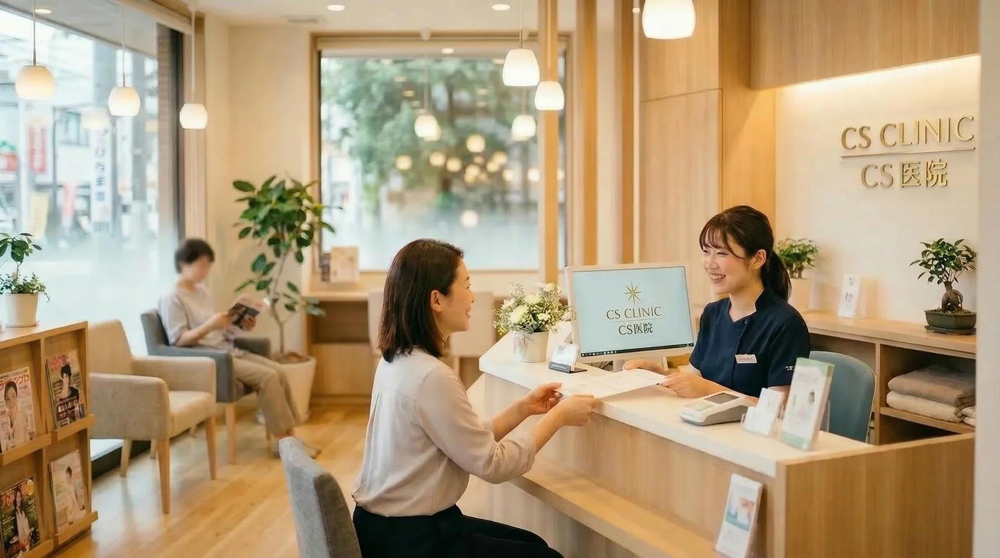
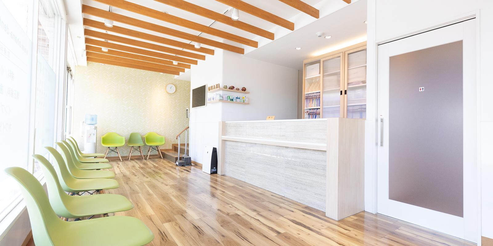
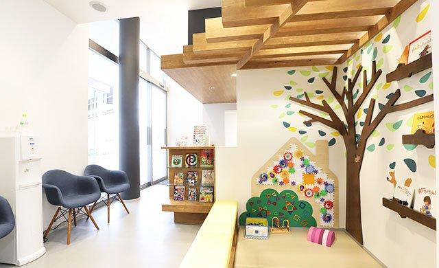
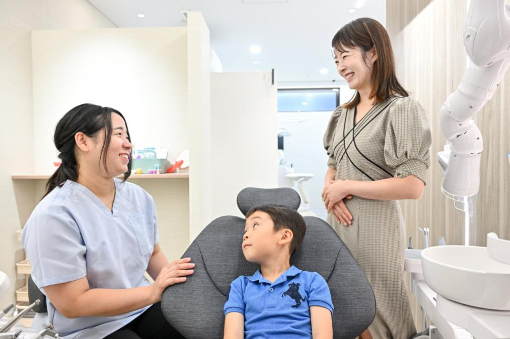

冷たいものがしみる
歯が欠けた気がする
詰め物が取れた
むし歯・歯の痛み
しみる、痛むといった症状のほか、「むし歯があるか見てほしい」というご相談もお受けしています。

お子さんが通院中の保護者の方へ
子どもの歯は気にかけているのに、自分の歯はつい後回し。
いつもの通院先で、今度はご自身のことも相談してみませんか。
仕上げみがきや定期的な受診は欠かさないけれど、自分のことまでは手が回らない。
しみる、歯ぐきから血が出る。気づいてはいても、つい様子見にしてしまう。
新しく医院を探して、予約して、場所を調べて。それだけで足が遠のいてしまう。
そのきっかけは、いつもの通院先にあるかもしれません。
お子さんの付き添いで何度も来ている医院なので、初めての場所を探す負担がありません。
小児歯科だけでなく、大人の方のむし歯や歯ぐき、クリーニングのご相談もお受けしています。
新たに電話をかけなくても、お子さんの受診日に受付でお声がけいただければご案内します。
「私も一度、診てもらえますか？」
受付でこのひと言を伝えていただくだけで大丈夫です。
お子さんの付き添いで過ごしているこの場所が、そのままご自身の診療の場所になります。

お子さんの診療を待つときと同じ待合室です。初めての場所で緊張することがありません。

絵本やおもちゃを置いたコーナーを設けています。待ち時間の過ごし方についてはスタッフにご相談ください。

何をするのかをお伝えしてから進めることを大切にしています。不安なことは遠慮なくお話しください。
このページに掲載している写真は、すべてAIで生成した架空のイメージです。実在する医院・スタッフ・患者を撮影したものではなく、実際の設備や提供しているサービスを示すものでもありません。
はっきりした症状がなくても、気がかりなことがあれば受診のきっかけになります。
しみる、痛むといった症状のほか、「むし歯があるか見てほしい」というご相談もお受けしています。
出血や腫れなど、歯ぐきの気になる変化について、お口の状態を確認しながらご説明します。
症状がないときのチェックや歯のクリーニング、ご自宅でのケア方法についてもご相談いただけます。
診療の内容や進め方は、お口の状態を確認したうえでご説明します。
お子さんの受診時に受付でお声がけいただくか、Webやお電話でご予約ください。
気になっていることや、これまでの歯科受診の状況を伺います。
歯や歯ぐきの状態を確認します。必要に応じてレントゲン撮影などを行います。
確認した結果と今後の進め方をご説明します。ご不明な点は遠慮なくお尋ねください。
※当日の内容や所要時間は、お口の状態やご予約の状況によって異なります。
ご希望の場合は、受付またはご予約の際にお伝えください。予約枠や当日の診療状況によっては、別の日時をご案内することがあります。
待合室でお待ちいただけます。お子さんのお預かりは行っておりませんので、付き添いの方と一緒にご来院いただくか、ご予約の際にご相談ください。
はい、ご相談ください。久しぶりの方も、まずは今のお口の状態を確認するところから始めます。
お口の状態を確認したうえで、考えられる進め方をご説明します。治療を始めるかどうかは、説明をお聞きになってからご検討いただけます。
マイナ保険証または資格確認書などをお持ちください。服用中のお薬がある方は、お薬手帳があると確認がスムーズです。
今このページをご覧になっている場所に合わせて、ご相談の方法をお選びください。
お子さんの受診のついでに、ご自身の初診についてご案内します。
たとえば、こう伝えるだけで大丈夫です「私も一度、診てもらえますか？」
次回のお子さんの受診日にあわせたご相談も承ります。
制作サンプルのため、このボタンを押しても予約や情報送信は行われません。